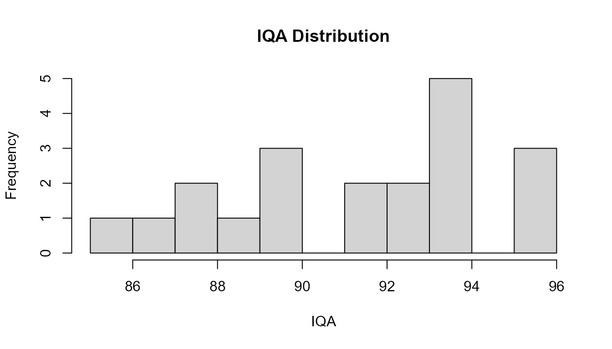
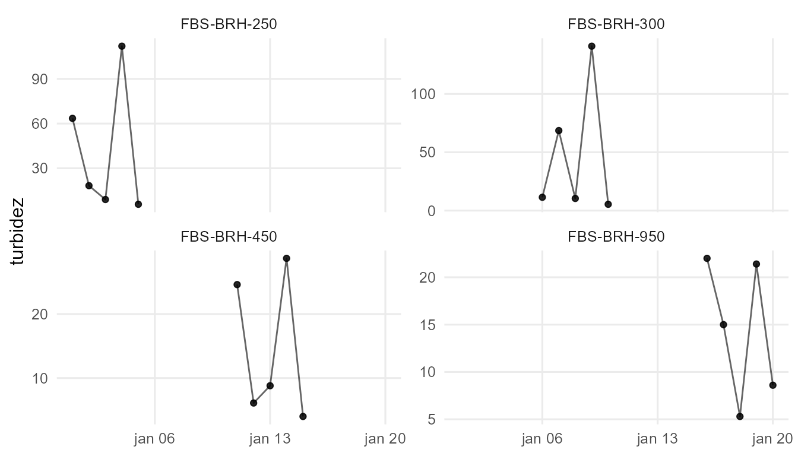
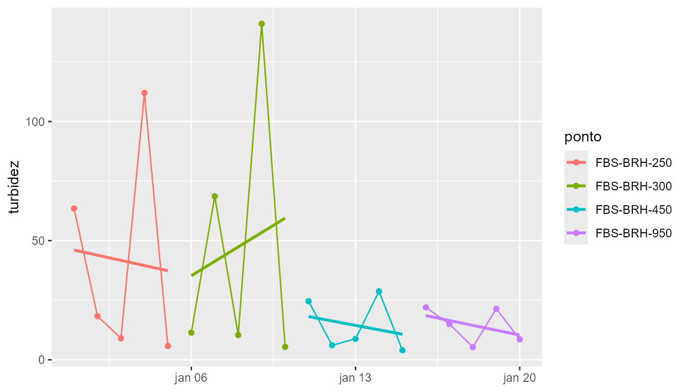
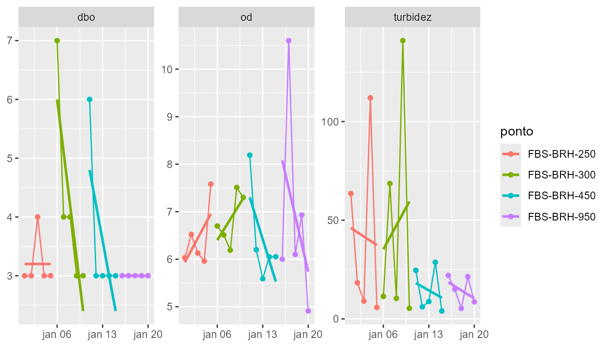

tikatuwq: Water Quality Indices and Temporal Trends
tikatuwq developers
Source:vignettes/tikatuwq-methods.Rmd
tikatuwq-methods.RmdIntroduction
This vignette focuses on the methods implemented in tikatuwq for computing water quality indices and analyzing temporal trends. We cover:
- Water Quality Index (IQA/WQI) calculation methods
- Trophic State Index (IET) for lakes and reservoirs
- Temporal trend analysis using robust and parametric methods
- Parameter-specific analysis tools
Water Quality Index (IQA/WQI)
Method overview
The IQA combines sub-indices (Qi) for individual parameters using weighted arithmetic mean. The sub-indices are obtained by piecewise-linear interpolation over approximate curves (CETESB/NSF style).
Default parameters and weights
The default IQA implementation uses 9 parameters with standard weights:
Computing IQA
# Compute IQA with default settings
df_iqa <- iqa(wq_demo, na_rm = TRUE)
# View results
cols_show <- intersect(c("ponto", "IQA", "IQA_status"), names(df_iqa))
head(df_iqa[, cols_show, drop = FALSE])
#> # A tibble: 6 × 3
#> ponto IQA IQA_status
#> <chr> <dbl> <ord>
#> 1 FBS-BRH-250 89.8 Boa
#> 2 FBS-BRH-250 93.1 Otima
#> 3 FBS-BRH-250 92.2 Otima
#> 4 FBS-BRH-250 87.6 Boa
#> 5 FBS-BRH-250 95.7 Otima
#> 6 FBS-BRH-300 89.3 Boa
# Distribution
hist(df_iqa$IQA, breaks = 10, main = "IQA Distribution", xlab = "IQA")
Handling missing parameters
When na_rm = TRUE, weights are rescaled per row to use
only available parameters:
Custom weights
You can provide custom weights:
# Custom weights (must sum to 1)
custom_weights <- c(
od = 0.20,
coliformes = 0.20,
dbo = 0.10,
nt_total = 0.10,
p_total = 0.10,
turbidez = 0.10,
tds = 0.10,
pH = 0.05,
temperatura = 0.05
)
df_iqa_custom <- iqa(wq_demo, pesos = custom_weights, na_rm = TRUE)
cols_show2 <- intersect(c("IQA", "IQA_status"), names(df_iqa_custom))
head(df_iqa_custom[, cols_show2, drop = FALSE])
#> # A tibble: 6 × 2
#> IQA IQA_status
#> <dbl> <ord>
#> 1 92.4 Otima
#> 2 96.0 Otima
#> 3 95.2 Otima
#> 4 89.5 Boa
#> 5 99.1 Otima
#> 6 92.9 OtimaClassification
The IQA values are automatically classified into qualitative categories:
# Classification function
classify_iqa(c(15, 40, 65, 80, 95))
#> [1] Muito ruim Ruim Regular Boa Otima
#> Levels: Muito ruim < Ruim < Regular < Boa < Otima
# English labels
classify_iqa(c(15, 40, 65, 80, 95), locale = "en")
#> [1] Very Poor Poor Fair Good Excellent
#> Levels: Very Poor < Poor < Fair < Good < Excellent
# Distribution in demo data
table(df_iqa$IQA_status)
#>
#> Muito ruim Ruim Regular Boa Otima
#> 0 0 0 8 12Trophic State Index (IET)
Carlson IET
For lentic systems, the Carlson Trophic State Index uses Secchi depth, chlorophyll-a, and total phosphorus:
# Example dataset with required parameters
# df_lake <- data.frame(
# ponto = c("L1", "L2"),
# secchi = c(2.5, 1.0), # meters
# clorofila = c(5, 20), # ug/L
# p_total = c(0.02, 0.10) # mg/L (converted to ug/L internally)
# )
#
# iet_carlson(df_lake, .keep_ids = TRUE)The function automatically: - Converts p_total (mg/L) to tp (ug/L) if needed - Accepts aliases (sd for secchi, chla for clorofila) - Returns TSI values with classification
Temporal Trend Analysis
Single parameter trend
The trend_param() function computes Theil-Sen slope and
Spearman correlation:
# Add temporal structure to demo data
df_temporal <- wq_demo
df_temporal$data <- as.Date("2025-01-01") + seq_len(nrow(df_temporal)) - 1
# Compute trend for turbidity
trend_result <- trend_param(df_temporal, param = "turbidez")
print(trend_result)
#> rio ponto param n date_min date_max days_span
#> 1 BURANHEM FBS-BRH-250 turbidez 5 2025-01-01 2025-01-05 4
#> 2 BURANHEM FBS-BRH-300 turbidez 5 2025-01-06 2025-01-10 4
#> 3 BURANHEM FBS-BRH-450 turbidez 5 2025-01-11 2025-01-15 4
#> 4 BURANHEM FBS-BRH-950 turbidez 5 2025-01-16 2025-01-20 4
#> slope_per_year intercept rho_spearman p_value trend pct_change_period
#> 1 NA NA NA NA indefinido NA
#> 2 NA NA NA NA indefinido NA
#> 3 NA NA NA NA indefinido NA
#> 4 NA NA NA NA indefinido NAThe result includes: - slope: Theil-Sen slope -
p_value: Spearman correlation p-value - trend:
classification (increasing, decreasing, stable)
Plotting trends
library(ggplot2)
# Plot with trend line
p_trend <- plot_trend(df_temporal, param = "turbidez", method = "theilsen")
print(p_trend)
# With LOESS smoothing
p_loess <- plot_trend(df_temporal, param = "turbidez", method = "loess")
print(p_loess)
Multiple parameters
Use param_trend_multi() to analyze trends across
multiple parameters:
# Trends for multiple parameters
params <- c("turbidez", "od", "dbo")
trends_multi <- param_trend_multi(df_temporal, parametros = params)
print(trends_multi)
#> # A tibble: 12 × 7
#> rio ponto slope p_value r2 n parametro
#> <chr> <chr> <dbl> <dbl> <dbl> <int> <chr>
#> 1 BURANHEM FBS-BRH-250 -2.17e+ 0 0.904 5.66e- 3 5 turbidez
#> 2 BURANHEM FBS-BRH-300 6.04e+ 0 0.793 2.67e- 2 5 turbidez
#> 3 BURANHEM FBS-BRH-450 -1.86e+ 0 0.674 6.69e- 2 5 turbidez
#> 4 BURANHEM FBS-BRH-950 -2.04e+ 0 0.468 1.86e- 1 5 turbidez
#> 5 BURANHEM FBS-BRH-250 2.54e- 1 0.286 3.58e- 1 5 od
#> 6 BURANHEM FBS-BRH-300 2.20e- 1 0.253 4.00e- 1 5 od
#> 7 BURANHEM FBS-BRH-450 -4.43e- 1 0.199 4.74e- 1 5 od
#> 8 BURANHEM FBS-BRH-950 -5.85e- 1 0.478 1.79e- 1 5 od
#> 9 BURANHEM FBS-BRH-250 2.91e-14 1.000 1.04e-26 5 dbo
#> 10 BURANHEM FBS-BRH-300 -9.00e- 1 0.0577 7.50e- 1 5 dbo
#> 11 BURANHEM FBS-BRH-450 -6 e- 1 0.182 5.00e- 1 5 dbo
#> 12 BURANHEM FBS-BRH-950 1.99e-16 0.182 5.00e- 1 5 dboParameter-specific Analysis
Summary statistics
# Summary for one parameter
summary_turb <- param_summary(df_temporal, parametro = "turbidez")
print(summary_turb)
#> # A tibble: 4 × 8
#> rio ponto n mean sd min median max
#> <chr> <chr> <int> <dbl> <dbl> <dbl> <dbl> <dbl>
#> 1 BURANHEM FBS-BRH-250 5 41.7 45.6 5.8 18.3 112
#> 2 BURANHEM FBS-BRH-300 5 47.4 58.4 5.4 11.4 141
#> 3 BURANHEM FBS-BRH-450 5 14.4 11.4 4 8.8 28.7
#> 4 BURANHEM FBS-BRH-950 5 14.5 7.48 5.3 15 22
# Multi-parameter summary
summary_multi <- param_summary_multi(df_temporal, parametros = c("turbidez", "od", "dbo"))
print(summary_multi)
#> # A tibble: 12 × 9
#> rio ponto n mean sd min median max parametro
#> <chr> <chr> <int> <dbl> <dbl> <dbl> <dbl> <dbl> <chr>
#> 1 BURANHEM FBS-BRH-250 5 41.7 45.6 5.8 18.3 112 turbidez
#> 2 BURANHEM FBS-BRH-300 5 47.4 58.4 5.4 11.4 141 turbidez
#> 3 BURANHEM FBS-BRH-450 5 14.4 11.4 4 8.8 28.7 turbidez
#> 4 BURANHEM FBS-BRH-950 5 14.5 7.48 5.3 15 22 turbidez
#> 5 BURANHEM FBS-BRH-250 5 6.44 0.671 5.96 6.13 7.58 od
#> 6 BURANHEM FBS-BRH-300 5 6.84 0.550 6.19 6.7 7.51 od
#> 7 BURANHEM FBS-BRH-450 5 6.42 1.02 5.59 6.05 8.19 od
#> 8 BURANHEM FBS-BRH-950 5 6.91 2.19 4.91 6.1 10.6 od
#> 9 BURANHEM FBS-BRH-250 5 3.2 0.447 3 3 4 dbo
#> 10 BURANHEM FBS-BRH-300 5 4.2 1.64 3 4 7 dbo
#> 11 BURANHEM FBS-BRH-450 5 3.6 1.34 3 3 6 dbo
#> 12 BURANHEM FBS-BRH-950 5 3 0 3 3 3 dboParameter plots
# Single parameter plot
p1 <- param_plot(df_temporal, parametro = "turbidez")
print(p1)
# Multi-parameter plot
p2 <- param_plot_multi(df_temporal, parametros = c("turbidez", "od", "dbo"))
print(p2)
Statistical Methods
Best Practices
Choosing parameters for IQA
- Include all 9 default parameters when possible
- Use
na_rm = TRUEif some parameters are missing - Adjust weights only if you have domain knowledge
Handling censored values
- Use
nd_policy = "ld2"(default) for conservative estimates - Consider
nd_policy = "na"if censored values should not influence results - Document your choice in reports
Trend analysis
- Use Theil-Sen for robust estimates with outliers
- Require at least 4 observations per group for reliable trends
- Consider seasonal effects when analyzing temporal data
Units consistency
- Ensure all parameters use standard units (mg/L, NTU, etc.)
- Use
clean_units()to convert if needed - Document unit conversions in methodology sections
References
- Carlson, R. E. (1977). A trophic state index for lakes. Limnology and Oceanography, 22(2), 361-369.
- Lamparelli, M. C. (2004). Graus de trofia em corpos d’agua do estado de Sao Paulo: avaliacao dos metodos de monitoramento. Tese de Doutorado, Universidade de Sao Paulo.
- CETESB. (2021). Aguas superficiais: indice de qualidade das aguas (IQA). Companhia Ambiental do Estado de Sao Paulo.
Summary
This vignette covered:
- IQA calculation with default and custom weights
- Handling missing parameters
- IET methods for lentic systems
- Temporal trend analysis (Theil-Sen, Spearman)
- Parameter-specific analysis tools
For workflow examples, see the “From raw water quality data to CONAMA report” vignette.